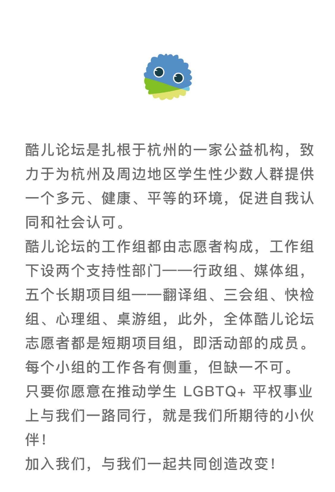
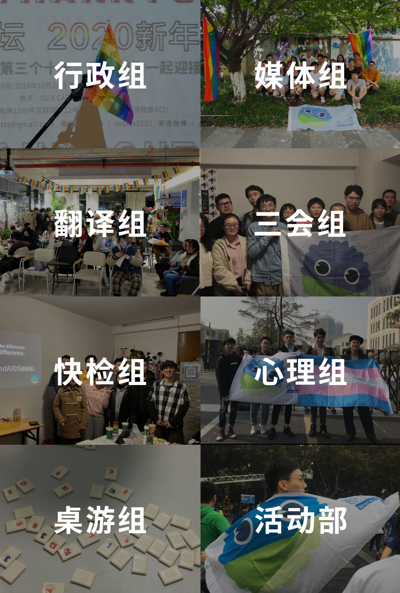

主要职能
行政组为各部门的工作提供支持，例如协调会议时间、掌管论坛财政大权、制定酷儿论坛各项规章制度、对各项目进行监测评估、撰写年度发展报告、进行志愿者管理及考核。我们需要
你有一定的档案管理经验和能力，可以接受较为繁琐的日常管理工作。行政组虽然自身没有什么很大的活动产出，但我们是酷儿论坛最坚实的后盾，与论坛同进退。行政组是和各组打交道最多的部门，很锻炼你为人处事的能力，让你有最充足的机会多多了解团队中的每个人，发现大家的可爱之处。
想要成为运筹帷幄社交力最强的那颗星星吗？想要体会铁面无私 push 志愿者的快感（不是）吗？
行政组欢迎你！
主要职能
媒体组负责社交平台运营，主要是微博/微信/QQ宣传平台的内容更新与日常维护，品牌推广和社群运营。
我们需要
视觉传达方向：（急缺）我们希望你具备一定的相关专业技能，如平面设计、绘画涂鸦、视频剪辑制作、原创文化内容产出。（熟练使用 Adobe 软件更佳）内容创作方向：（急缺）我们希望你有一定的文字功底，能够产出优质的原创内容。（有新媒体内容创作或非虚构写作经验更佳）文案策划方向：我们希望你有一定的新媒体嗅觉，善于组织文字和文案策划，能够将文字材料进行简单的整理，产出优质的文案。平台运营方向：我们希望你有一定的新媒体嗅觉，善于运营公共社交平台，掌握简单的微信文章排版，乐于与社群在社交平台互动。媒体组的工作适合远程或者在线工作，我们对身在外地的伙伴表示欢迎。微信平台：论坛吉祥物 AI “苦瓜君瓜瓜”的后台运营；微信公众号的后台运营（编辑排版、回复留言等工作）；推送原创内容；宣传酷儿论坛及其友邻社区的相关活动。新年筹款派对海报
2020年春季招新预热
活动宣传样例（剧本朗读）
主要职能
翻译组成立于2018年上半年，包括但不限于翻译整理性别、性少数议题的论文、新闻、图书。
在过去的2019年我们发布了“女权主义视角下的跨性别议题”、“既往不咎？‘向同性恋道歉’中的同性恋民族主义、霸权主义与历史”、“同志失马，焉知非福——《异议的红利》书评节译”、“性别的多层模型—非二元性别的生物学基础”、“同性恋基因科学”的科学性”多篇学术文章的系列译文，前后翻译字数高达七八九十万字！
我们2019年的历史可以概括如下：
泥潭学术门面，河蟹丰收产区。
忙时爆肝脱发，闲时砍柴喂马。
发展计划
我们希望在2020年上半年完成新的长篇学术文献翻译；开展更多样的翻译形式，如海报、漫画等形式；打造经典的翻译作品，比如说“酷儿文学/漫画”的连载翻译；涉猎更广阔的文化领域，为泥潭的国际化发展增砖添瓦。你有良好的双语能力，
文字功底优秀，能够从事翻译工作；
你有敏感的文化嗅觉，
能够搜寻国内外最新的性/别研究、社评；
你有不错的学术素养，
愿意针对某一问题展开深入探讨。
主要职能
桌游组负责每周六风雨无阻地组织酷儿桌游局，为社群联络感情，为泥潭增加收入。
我们需要
善于社交、会活跃气氛、熟悉桌游规则的小伙伴加入我们。
关于我们
桌游是酷儿论坛连接社群的重要活动，我们收录桌游数目近半百。每次都有坐台的志愿者在场，不管是两个人的尴尬局面，还是十个人的热火朝天，我们的志愿者都能处理的井然有序（这是展望）。当然，偶尔荒腔走板地举办飞花令和成语接龙大赛也是桌游的增味剂，只要你愿意，桌游散场后还能有下半场。
杭州同志中心一直是社群伙伴的避风港。不管你是混迹多年，还是初来乍到，你都可以在这里找到认同和归属感。桌游活动传承延续多年，俨然成为了中心的招牌活动之一。不管你是为了来偶遇邂逅，放飞自我，还是吐露心事，这里都欢迎你。（注：杭州同志中心是酷儿论坛和姊妹机构向阳花开共用的活动场地。）
三会组负责酷儿论坛读书会/观影会/分享会的策划、筹备和举办。我们欢迎对性/别、女权等相关书籍和议题有深入了解或兴趣的同学开展读书会活动。关于我们
读书会：邀请大家一起阅读与LGBTQ+、性别、女权以及女权主义相关的书籍和文章，以探讨歧视、多元性别、情欲等与我们的社群生活息息相关的议题。
观影会：主要与大家分享性少数、女权主义等议题的相关好片，映后精彩的分享环节往往是观影会的重头戏。
分享会：充分利用酷儿论坛1500万（不是）会员的数量优势，邀请大家带来ta们各自的有趣经历。
快检组是酷儿论坛的HIV项目组，主要为社群提供HIV检测服务、艾滋防治宣传服务。我们希望你可以具有HIV相关的医学常识（欢迎医学相关专业的朋友），对疾病有客观的认知，不抱偏见，善于社交，愿意为更多人提供检测服务。HIV/AIDS议题紧跟我们社群的需求，是酷儿论坛关注的重要议题。在过去的一年，我们为杭州高校性少数提供了上百例HIV快检，为数例初筛阳性的朋友提供后续支持和关怀；我们进入高校，举办讲座、工作坊等活动，助力HIV相关知识的传播；我们和浙江大学附属第一医院合作，进行了HIV疫苗二期试验的志愿者招募；我们和疾控部门合作，在杭州高校大学生中开展了一次性健康问卷调查。酷儿论坛快检组欢迎你的加入。让我们携手，和许多社会力量一道，致力于联合国2030年终结艾滋(#EndAIDS)的目标。
心理组
邀请心理咨询师或相关心理健康从业者不定期举办团体心理辅导，组织与策划多元多彩的心理讲座。定期举办心理健康相关的谈话沙龙，为社群成员提供安全开放的沟通环境，构建团结有爱、彼此支持的酷儿内群体建立杭州及周边地区友善咨询师网络，为寻求咨询服务的小伙伴提供更友善的咨询环境。如果你对心理咨询有兴趣，或已具备一定的心理学知识/心理学或者教育学专业背景/尊重多元，包容差异，乐于倾听/愿意用自己的闲暇时间为性少数人群心理健康提供服务与帮助/希望和性少数群体一同认识自己，发现自己；那么，欢迎你加入心理组！
行政事宜
本次春季招新为小组定向招新，每人可选择1-2个意向小组（有第一志愿和第二志愿的主次之分），最后按面试情况录用进其中一组。
报名截止时间：2020年3月21日（周六）23:59
线上面试时间：2020年3月21-22日
我们会在周六之前向你发送确认邮件协调面试时段，面试将以线上语音通话的方式进行。
如果你对酷儿论坛的工作有什么疑问，可以加入我们的招新咨询群（完成表单后自动弹出二维码），我们随时乐意为你解答。
扫描下方二维码或点击阅读原文填写表单，酷儿论坛欢迎你的加入。